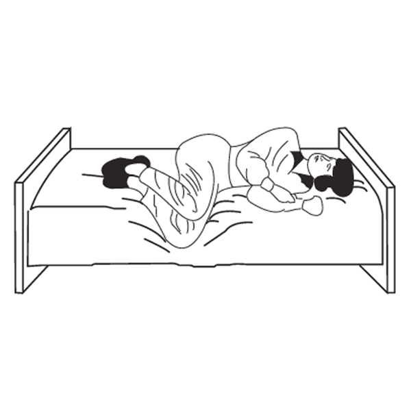

Instrucciones para llevar a cabo el ejercicio de Brandt-Daroff para el vértigo usando esta app:
- Sientate sobre una cama, sofá o superficie plana. Necesitarás poder tumbarte hacia ambos lados con comodidad y sin elementos que interfieran. Es imporante que mantengas una posición erguida mientras estés sentado. 
- Pulsa el botón de "Start". Escucharás un audio que dice "izquierda". Es momento de tumbarte hacia el lado izquierdo sobre tu hombro izquierdo. Procura que tu nariz esté apuntando hacia arriba a aproximadamente un ángulo de 45 grados.
- Aguanta en esta postura durante 30 segundos. Cuando esos 30 segundos hayan acabado escucharás "Siéntate". Indicando que vuelvas a sentarse erguido
- Aguanta sentado durante otros 30 segundos (hasta que se complete el primer minuto).
- Cuando hayan acabado esos 30 segundos (en este punto ya llevarás 1 minuto) escucharás "derecha". Este audio indicará que es momento de tumbarse sobre hacia el lado derecho, sobre tu hombro derecho. También deberás procurar que tu nariz esté apuntando hacia arriba a aproximadamente un ángulo de 45 grados.
- Aguanta en esta postura durante 30 segundos. Cuando esos 30 segundos hayan acabado escucharás "Siéntate". Indicando que vuelvas a sentarse erguido

- Repite este ciclo hasta que el contador llegue a 10 minutos y escuches un audio que dice "Fin del ejercicio".